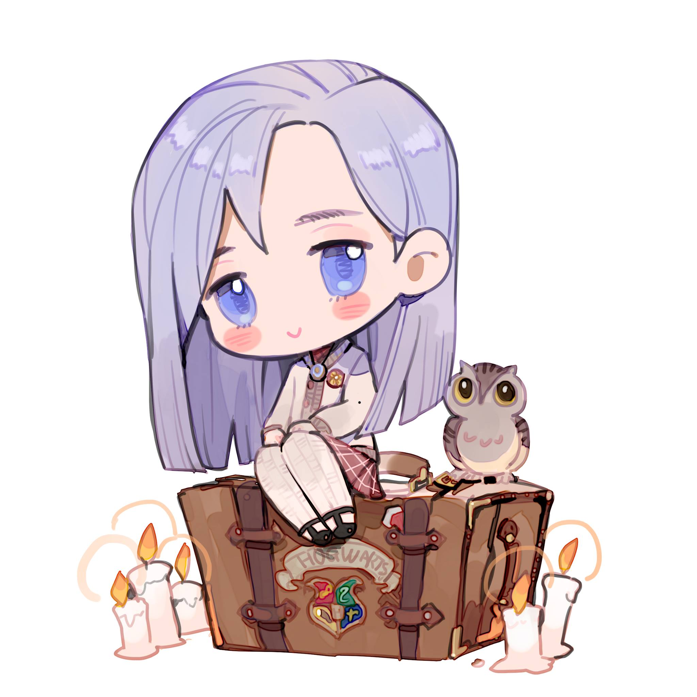

| 原創角色 | 姓名 | 介紹 |
|---|---|---|
| 丹尼爾·佩傑Daniel Page | 膽小，懦弱，自卑，擅長製作魔藥，總被卡珊德拉三人組欺負。家族似乎與某個組織有關 | |
|  | 艾薇·沃靈頓Ivy Warrington | 有自信，有主見，能夠控制自己強大的魔法天賦，經常為朋友兩肋插刀，哪怕為此違反校規，只是總愛忘事。父親是麻瓜，母親是女巫，和外婆一起長大。本來有個長得一模一樣的孿生姐姐溫尼菲爾德 |
| 洛蒂·特納Lottie Turner | 性格活潑開朗，受父親的影響喜歡畫畫，對美術有獨到的見解，經常畫出傳神的作品，身上經常沾著很多顏料。父親在她小的時候被黑巫師襲擊，下落不明，後來在一隻神秘蝴蝶的指引下找到了父親的遺作。 | |
| 卡珊卓·沃爾 Cassandra Vole | 史萊哲林的學生，父親在魔法部工作，性格高傲，嘴上從來不饒人，但實際上只是希望證明自己高人一等，經常帶著弗雷兄弟一起出現。 | |
| 弗雷雙子 The Frey Brothers | 史萊哲林的一對孿生兄弟，長得一模一樣，平時總愛跟著卡珊德拉，除了搞惡作劇以外沒有任何能做成的事情 | |
| 凱文·法雷爾Kevin Farrell | 學習成績優秀，運動能力很差，愛看書，不希望朋友們到處惹事，喜歡蘿賓。 | |
| 蘿賓·西斯爾斯韋特 Robyn Thistlethwaite |
運動能力很強的女孩，魁地奇隊主力，個子比大多數男生還要高，非常重義氣，對朋友十分忠誠，笑點很低，有時候自己就是最大的笑料。 |